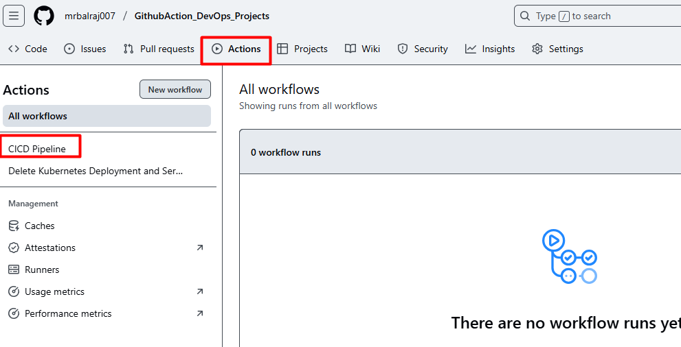
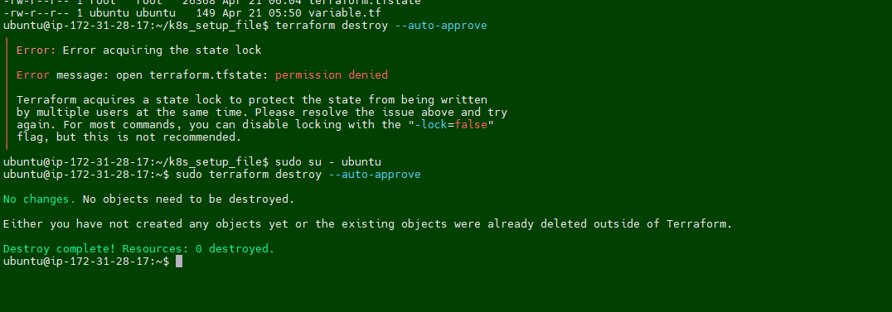
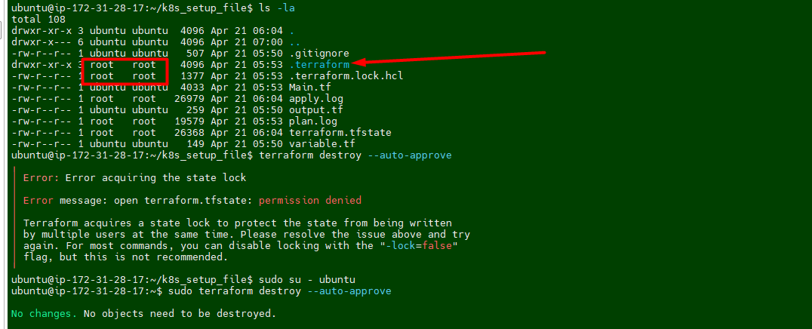
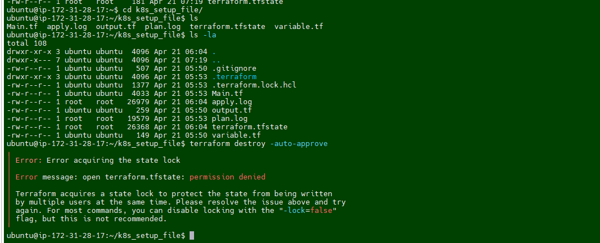

TESTING DOCUMENT USING GITHUB PAGES
Project Overview
This project outlines the step-by-step process of setting up a CI/CD pipeline using GitHub Actions. The project demonstrates how to automate the build, test, and deployment of an application to Kubernetes using tools like Docker, Trivy, SonarQube, and Terraform. The project also highlights the integration of AWS role for managing cloud resources and Kubernetes clusters.
Prerequisites
Before diving into this project, here are some skills and tools you should be familiar with:
- Terraform installed on your machine.
- A GitHub account.
- A GitHub personal access token with the necessary permissions to create repositories.
⚠️ Important:
- Make sure First you will create a
.pemkey manually from the AWS console. i.e "MYLABKEY.pem" because it will be used for creatingEC2VMs andEKS cluster.- Copy
MYLABKEY.pemin the terraform directory (01.Code_IAC_Selfhosted-Runner-and-Trivyand03.Code_IAC_Terraform_box) as below your terraform code- Generate the Github Token
ls \Learning_GitHub_Action\01.Github_Action_DevOps-Project\Terraform_Code_Infra_setup Mode LastWriteTime Length Name ---- ------------- ------ ---- dar--l 17/04/25 12:48 PM .terraform dar--l 21/04/25 12:34 PM 00.Code_IAC-github-repo dar--l 21/04/25 12:34 PM 01.Code_IAC_Selfhosted-Runner-and-Trivy dar--l 21/04/25 1:38 PM 02.Code_IAC_SonarQube dar--l 21/04/25 12:34 PM 03.Code_IAC_Terraform_box -a---l 20/08/24 1:45 PM 493 .gitignore -a---l 21/04/25 1:59 PM 18225 AboutThis Project.md -a---l 19/04/25 8:48 PM 1309 main.tf ```` - [Clone repository for terraform code](https://github.com/mrbalraj007/Learning_GitHub_Action/tree/main/01.Github_Action_DevOps-Project/Terraform_Code_Infra_setup)<br> > üí° **Note:** Replace GitHub Token, resource names and variables as per your requirement in terraform code > - For **`github Repo`** Token value to be updated in file - `00.Code_IAC-github-repo/variables.tf` (i.e default- ```xxxxxx```*) > - **For EC2 VM** - `01.Code_IAC_Selfhosted-Runner-and-Trivy/main.tf` (i.e keyname- ```MYLABKEY```*) - `03.Code_IAC_Terraform_box/main.tf` (i.e keyname- ```MYLABKEY```*) > - For **Cluster name** - `03.Code_IAC_Terraform_box/k8s_setup_file/main.tf` (i.e ```balraj```*). > - For **Node Pod** - `03.Code_IAC_Terraform_box/k8s_setup_file/variable.tf` (i.e ```MYLABKEY```*) - **Set up your GitHub token**: - Create a new GitHub personal access token with the `repo` scope at https://github.com/settings/tokens. - Then set it as an environment variable (DO NOT commit your token to version control): ```bash # For Linux/macOS export GITHUB_TOKEN=your_github_token # For Windows Command Prompt set GITHUB_TOKEN=your_github_token # For Windows PowerShell (I used this one) # $env:GITHUB_TOKEN="your_github_token" $env:TF_VAR_github_token = "your-github-personal-access-token" ``` - **Test and verify with curl again in powershell terminal:** ```powershell $headers = @{ Authorization = "token $env:TF_VAR_github_token" } Invoke-WebRequest -Uri "https://api.github.com/user" -Headers $headers ``` - You should see your GitHub user info in JSON, **not** "Bad credentials". --- ## **Key Points** 1. **GitHub Actions Overview**: - GitHub Actions is used as the CI/CD tool for this project. - It eliminates the need for setting up and maintaining Jenkins servers by providing managed runners. 2. **Pipeline Stages**: - **Compile**: Builds the application. - **Security Checks**: Scans for vulnerabilities using Trivy and GitLeaks. - **Unit Testing**: Executes test cases to ensure code quality. - **Build and Publish Docker Image**: Builds a Docker image and uploads it as an artifact. - **Deploy to Kubernetes**: Deploys the application to an EKS cluster using Terraform. 3. **Tools and Technologies Used**: - **GitHub Actions**: CI/CD automation. - **Docker**: Containerization of the application. - **Trivy**: Security scanning for vulnerabilities. - **GitLeaks**: Detects hardcoded secrets in the source code. - **SonarQube**: Code quality analysis. - **AWS CLI**: Manages AWS resources. - **Terraform**: Infrastructure as Code (IaC) for provisioning EKS clusters. - **Kubernetes**: Orchestrates containerized applications. 4. **Why Use This Project**: - Automates the software delivery process. - Ensures code quality and security through automated checks. - Simplifies deployment to Kubernetes clusters. - Demonstrates best practices for CI/CD pipelines. 5. **Takeaways**: - Understanding of GitHub Actions and its capabilities. - Hands-on experience with integrating security tools like Trivy and GitLeaks. - Knowledge of deploying applications to Kubernetes using Terraform. - Insights into managing AWS resources with AWS CLI. --- ## **Step-by-Step Process** ### <span style="color: Yellow;">Setting Up the Infrastructure </span> I have created a Terraform code to set up the entire infrastructure, including the installation of required applications, tools, and the EKS cluster automatically created. - ⇒<span style="color: brown;"> Docker Install - ⇒<span style="color: brown;"> SonarQube Install - ⇒<span style="color: brown;"> Trivy Install - ⇒<span style="color: brown;"> Terraform Install - ⇒<span style="color: brown;"> EKS Cluster Setup > üí° **Note:** ⇒<span style="color: Green;"> ```EKS cluster``` creation will take approx. 10 to 15 minutes. > #### <span style="color: Yellow;"> To Create EC2 Instances First, we'll create the necessary virtual machines using ```terraform``` code. Below is a terraform Code: Once you [clone repo](https://github.com/mrbalraj007/Learning_GitHub_Action/blob/main/01.Github_Action_DevOps-Project/Terraform_Code_Infra_setup) then go to folder *<span style="color: cyan;">"01.Github_Action_DevOps-Project/Terraform_Code_Infra_setup"</span>* and run the terraform command. ```bash cd 01.Github_Action_DevOps-Project/Terraform_Code_Infra_setup $ ls 00.Code_IAC-github-repo/ 01.Code_IAC_Selfhosted-Runner-and-Trivy/ 02.Code_IAC_SonarQube/ 03.Code_IAC_Terraform_box/ 'AboutThis Project.md' main.tfüí° Note: ⇒ Make sure to run
main.tfwhich is located outside of the folder. I have created the code in such a way that a single file will call all of the folders.
ls -la
total 72
-rw-r--r-- 1 bsingh 1049089 493 Aug 20 2024 .gitignore
drwxr-xr-x 1 bsingh 1049089 0 Apr 21 12:34 00.Code_IAC-github-repo/
drwxr-xr-x 1 bsingh 1049089 0 Apr 21 12:34 01.Code_IAC_Selfhosted-Runner-and-Trivy/
drwxr-xr-x 1 bsingh 1049089 0 Apr 21 13:38 02.Code_IAC_SonarQube/
drwxr-xr-x 1 bsingh 1049089 0 Apr 21 12:34 03.Code_IAC_Terraform_box/
-rw-r--r-- 1 bsingh 1049089 21284 Apr 21 14:44 'AboutThis Project.md'
-rw-r--r-- 1 bsingh 1049089 1309 Apr 19 20:48 main.tf
main.tf file using following terraform command.
Now, run the following command.
terraform init
terraform fmt
terraform validate
terraform plan
terraform apply
# Optional <terraform apply --auto-approve>
Once you run the terraform command, then we will verify the following things to make sure everything is setup properly via a terraform.
Inspect the Cloud-Init logs:
Once connected to EC2 instance then you can check the status of the user_data script by inspecting the log files.
# Primary log file for cloud-init
sudo tail -f /var/log/cloud-init-output.log
or
sudo cat /var/log/cloud-init-output.log | more
üîç- If the user_data script runs successfully, you will see output logs and any errors encountered during execution.
üîç- If there‚Äôs an error, this log will provide clues about what failed.
- Verify the Outcome of "
cloud-init-output.log"
Verify the Installation
-
[x] Docker version
-
[x] trivy version
- [x] Terraform version
- [x] eksctl version
- [x] kubectl version
- [x] aws cli version
Verify the EKS Cluster installation
- Will take a putty session of from Terraform EC2
- On the
terraformvirtual machine, Go to directoryk8s_setup_fileand open the filecat apply.logto verify the cluster is created or not. - Will verify the cluster status from
sudo cat /var/log/cloud-init-output.log | moreorcat /home/ubuntu/k8s_setup_file/apply.log
ubuntu@ip-172-31-90-126:~/k8s_setup_file$ pwd
/home/ubuntu/k8s_setup_file
ubuntu@ip-172-31-90-126:~/k8s_setup_file$ cd ..
- After Terraform deploys on the instance, now it's time to setup the cluster. If you logout the ssh session then reconnect the SSH and run to following command:
⚠️ Important:
Theaws eks update-kubeconfigcommand is used to configure your local kubectl tool to interact with an Amazon EKS (Elastic Kubernetes Service) cluster. It updates or creates a kubeconfig file that contains the necessary authentication information to allow kubectl to communicate with your specified EKS cluster.What happens when you run this command:
The AWS CLI retrieves the required connection information for the EKS cluster (such as the API server endpoint and certificate) and updates the kubeconfig file located at~/.kube/config (by default). It configures the authentication details needed to connect kubectl to your EKS cluster using IAM roles. After running this command, you will be able to interact with your EKS cluster using kubectl commands, such askubectl get nodesorkubectl get pods.
Verify GitHub Repo and GitHub Actions
- Verify GitHub repository created and initialize it because we are using terraform.
- Verify a
.github/workflowsdirectory created along with two YAML file for the pipeline.
Adding a Virtual Machine as a Runner
- I'll be using self-hosted runner to execute all the pipeline.
- Configure the runner by following the commands provided in GitHub's settings.

- Click on new
self-hosted runnerand selectLinux - Notedown the token value somewhere as we need to in runner VM.
- Take putty session of
runnerEC2 - Go to
actions-runnerfolder
- Update/Paste the token value here as mentioned in screenshot.
- Change the execution mode for script and run it.
chmod +x selfhost-runner.sh
üí° Note:
Take note of the token value from here and paste it into the script in runner at the following spot. This ensures that the script executes successfully with the necessary permissions. Once you've finished, save your modifications and run the script to test whether it works as planned.
Troubleshooting:
- I am getting below error message while execute the file.

Fix/Solution:
- I try explicitly invoking the bash interpreter:
- The solution is to remove these carriage return characters using the dos2unix command:
- Install dos2unix if you haven't already:
- Run
dos2unixonselfhost-runner.shscript: - Try running the script again:
üí° Idea: This should now execute correctly because the problematic carriage return characters will have been removed
It works :-) and I am able to execute the file.


Setup SonarQube
- Go to SonarQube EC2 and notedown the Public IPAddress and open a new browser.
- Access SonarQube via
http://<your-server-ip>:9000.üí° Note: When you access the above URl then it will be promot for login. Use the "
admin/admin" for first time login and will prompt for change the password Once you change the password, make sure to create a strong and secure one that you can remember. Afterward, you will have full access to the system's features and settings.
Create a token in SonarQube
- Go to
Administration>Security>Users>Create a new token
Configure Secrets and Variables in GitHub Repo.
Go to Repo `GithubAction_DevOps_Projects`
Click on `settings`
Click on `Secrets and Variables`
Select `Actions`.
üí° Note:
You have to update all the required tokens and secrets value here. Part of Terraform code, I have already created a dummy values, which needs to be replaced. Once you have replaced the dummy values with the actual tokens and secrets, ensure that you test the configuration thoroughly to confirm that everything functions as expected. This will help prevent any issues during deployment and maintain the integrity of your infrastructure.
-
To Update Sonar URL
-
To update the
EKS_KUBECONFIGsecret - Take putty session of Terraform EC2 instnace
- run the command
cat ~/.kube/config - copy the whole content and paste into the secret.
Attach Role to Runner EC2
- Select the EC2 VM and click on the
actions>security>Mofify IAM Roles on the runner.
- Select the role
Role_k8_Cluster_profile - Click on update IAM Role.
Writing the CI/CD Pipeline
- Compile Stage:
- Use
actions/checkoutto clone the repository. - Set up the required environment (e.g., JDK 17 for Java projects).
- Compile the application using build tools like Maven.
- Use
- Security Checks:
- Install and run Trivy to scan for vulnerabilities in Docker images.
- Use GitLeaks to detect hardcoded secrets in the source code.
- Unit Testing:
- Execute test cases to validate the application.
- Build and Publish Docker Image:
- Build a Docker image using
docker build. - Push the image to a container registry or upload it as an artifact.
- Build a Docker image using
- Deploy to Kubernetes:
- Use Terraform to provision an EKS cluster.
- Deploy the application using Kubernetes manifests.

- Here is the complete CICD- Pipeline details
Verify the Docker Image
Verify code coverage in SonarQube
Verify pipeline Status
Verify the pods in runner VM
Verify Application Status
Environment Cleanup:
- Following resouces are created as pert of this project.
To delete deployment:
-
I've created a
Github Actionto destroy the Kubernetesdeploymentandservices. -
Delete all deployment/Service:
-
In github action, and click on the second pipeline to delete the deployment and service.
-
Here is the complete CICD- Pipeline to destroy Deployment and Services
-
To delete AWS EKS cluster
- Login into the
Terraform EC2instance and change the directory to /k8s_setup_file, and run the following command to delete the cluster.sh sudo su - ubuntu cd /k8s_setup_file sudo terraform destroy --auto-approve
Troubleshooting:
- I am getting below error message while running the
Terraform destroy. 
Fix/Solution:
- I noticed that permission is set to root for terraform dirctory. we have to take ownership first and then try to delete it. 
- Run the following command to take ownership
- I was still getting error message while runing the desrtoy 
- I ran the following command again for entire terraform folder.
- Rerun the destroy command and this time it works :-)
To delete the Virtual machine.
Go to folder "01.Github_Action_DevOps-Project/Terraform_Code_Infra_setup" and run the terraform command.
- 00.Code_IAC-github-repo
- 01.Code_IAC_Selfhosted-Runner-and-Trivy
-02.Code_IAC_SonarQube
- 03.Code_IAC_Terraform_box
```sh
Terraform destroy --auto-approve
```
üí° Note:
You must use this command from
each folderin order to destroy the entire infrastructure.
Why Use This Project
- Automation: Reduces manual effort in building, testing, and deploying applications.
- Security: Ensures code and container security through automated scans.
- Scalability: Deploys applications to scalable Kubernetes clusters.
- Best Practices: Demonstrates industry-standard CI/CD practices.
Conclusion
This project provides a comprehensive guide to setting up a CI/CD pipeline using GitHub Actions. By integrating tools like Docker, Trivy, SonarQube, and Terraform, it ensures a secure and efficient software delivery process. The use of AWS CLI and Kubernetes further demonstrates the deployment of applications to cloud-native environments. This project is a valuable resource for DevOps engineers looking to implement modern CI/CD pipelines.
Ref Link: